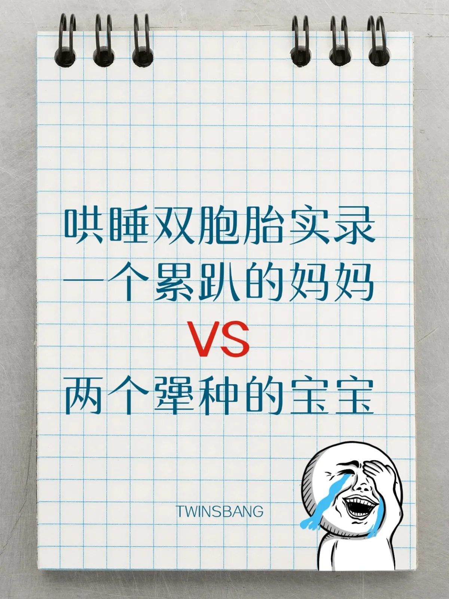

A妈妈：稀奶大法，宝宝全程黑人问号脸🙃
我家“双奶鹰”夜夜开趴，每晚两点准时来点“奶粉特饮”，搞得我快成奶牛。后来我搞了个“稀奶大法”：奶粉浓度从3勺到2勺，再到1勺，最后变成白开水。
宝宝喝完那表情，活像喝了假奶，眼神写满“全世界都在骗我”。但一周后，他们终于觉悟：半夜起来啥好事都没有，还是睡觉香！第一次整夜无声，我耳边仿佛响起了天使的歌声，眼泪差点掉枕头上。
B妈妈：三天整觉？背后全靠硬着心肠😭
我家姐妹花简直是“哭声交响团”，训练整觉时，我咬牙狠心不抱、不喂，听她们此起彼伏地哭。一度怀疑自己能不能熬下去……
第一晚：哭1小时，泪如雨下；
第二晚：哭30分钟，我的心硬了一点；
第三晚：她们睡整觉了，而我，彻夜失眠，愧疚到想打自己。
育儿果然是修罗场，但看她们现在睡得香，突然觉得自己当初真是伟大得像“妈祖”！
C妈妈：温柔派，也是一种修行🌙
别问我怎么训睡，我根本没训过！姐弟俩一直是“夜醒小能手”，20个月才睡整觉。我坚持用我的“金牌拍屁神功”——轻轻拍拍肩膀和屁股，告诉他们“妈妈在呢”。
有人说这样太累，我也知道啊！但我的佛系理念是：有些宝宝就是需要多点时间。事实证明，他们熬夜熬累了，就自己会睡了，而我，顺便练出了钢铁意志和不灭的耐心💪。
D妈妈：哭声哲学的反对派🙅♀️
医生说4-6个月是断夜奶的黄金期，可我家的“双黏糕”直接拖到了12个月。试过狠心，但听到撕心裂肺的哭声，我选择了撤退。
后来改成“温水煮青蛙式”断奶：每晚少喂一点，慢一点，直到有一天，他们竟然一觉睡到大天亮！
说实话，这不是技巧，是妥协后的好运气。我只想告诉大家，育儿别太逼自己，偶尔妥协也是一种智慧🌈。
E妈妈：硬核兄弟，育儿全靠心态🤯
我家“双闹钟”兄弟，是我人生的劫。六个月开始训睡，尝试了各种方法，统统无效！哭声免疫？抱哄不抱？延时喂奶？抱歉，这俩祖宗全程拒收。
他们哭起来像在比肺活量，而我，活成了裁判，连裁判哨都被吹成“破音”。
直到两岁多，他们突然良心发现，开始睡整觉。
[爱心]圆圈妈妈总结：
每个育儿路上的父母，都是被生活磨炼的战士。
双胞胎的“睡整觉修行”，既是对宝宝的调教，更是对自己的修炼。
你会在无数个崩溃的瞬间明白：
哄睡双胞胎这件事，很多时候不是看方法，
而是看两位小主啥时候良心发现。
总之，心态一定要稳，
毕竟孩子是“来报仇的”😩。
\x26lt;a data-windowproduct=\x26quot;v2=HLNFlDe2rd_BcH9GeCL15YCHFHKYzBwqODu1ElnhtVoZJkVf3Ns-RfZkr1IsoX7rXw\x26quot; data-customstyle=\x26quot;{\x26amp;quot;display\x26amp;quot;:\x26amp;quot;block\x26amp;quot;,\x26amp;quot;height\x26amp;quot;:\x26amp;quot;76px\x26amp;quot;}\x26quot; data-cardtype=\x26quot;3\x26quot; data-title=\x26quot;婴幼儿睡眠圣经（升级修订版）\x26quot; data-type=\x26quot;1\x26quot; tagname=\x26quot;mp-common-product\x26quot;\x26gt;[商品]\x26lt;/a\x26gt;
